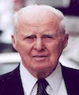

Dr. Norman Borlaug

This is the picture of Dr Norman Borlaug
Norman Ernest Borlaug (/ˈbɔːrlɔːɡ/; March 25, 1914 – September 12, 2009)[3] was an American agronomist who led initiatives worldwide that contributed to the extensive increases in agricultural production termed the Green Revolution. Borlaug was awarded multiple honors for his work, including the Nobel Peace Prize, the Presidential Medal of Freedom and the Congressional Gold Medal.
if you want know more please click here